Мамай. По следам босоногого старика.
- 31 мая 1 июня 2008 -
Из серии "Мемуары. Лето-2008"
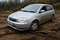
31 мая, суббота. Заезжали на Мамай в 12 часов
пасмурного дня. Недавно был дождь, дарога раскисла и пришлось часок повозиться в
грязи, помогая Runx'y домкратом и ветками выбираться из бездорожных ловушек.
Решили больше не рисковать и оставили машину между двумя ЛЭП. Дальше пешком по
знакомой дорожке. Зашли по пути и в зимовье. Кто-то с прошлого раза был,
некоторых вещей не хватало, наверное черемшанники пошарились. В кунге один такой
был. Спросил у него насчет клещей, он сказал - "Какие нафиг клещи, тут
вчера снег был и они все замерзли!". Ну вот мы так клещей и не видели всю
дорогу. Да, большой трехберезовый кулуар сошел мокрой лавиной, дольше всех
продержался.
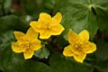
* * *
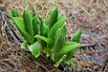
* * *
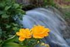
* * *
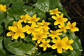
После кунга держим путь на перевал. Цветочки всякия
фотографируем, зелень молодую. На левом берегу снега ещё много, на правом
меньше. В районе Высокого цирка замечаю цепочку следов. Что это за сноубордисты
так высоко полезли? Там и кататься-то негде, все кусты уже оттаяли. Не,
нормальные сноубордисты давно бы уже обломались. Это наверное медведь. Здоровый
такой медведь, идет и по жопе хлопает... эээ чего это я, это же из другой
сказки...
Сказки сказками, а скоро еще одну цепочку следов на
дальнем склоне разглядел. А еще совсем скоро прямо на них и вышли.
"Босоногий старик" прошел здесь утром, шел по свежему снегу и поэтому
его косолапые отпечатки получились очень отчетливые. В одном месте он скатился
на лапах с небольшого склона. Самое интересное, что он ушел туда же, куда и нам
надо было идти. А нам надо было посмотреть на два озера, точнее их надо было еще
сначала найти. Ну мы и пошли. И нашли. Они оба рядом, одно выше, другое ниже.
Как раз между ними и прошли. А медвежьи следы ровные и красивые. Вот вроде
идешь рядом, проваливаешься изредка, шатаешься и петляешь, а его следы тянутся
ровной аккуратной цепочкой. 4WD, полный привод :) хочу быть медведем в следующей
жизни. Перед последним подъемом в перевальный цирк медведь повернул направо, и
судя по тем следам в Высоком и в Южном цирках, был уже на Осиновке или где-то
там.
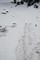
* * *
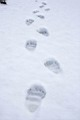
* * *
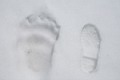
* * *
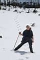
* * *
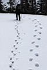
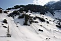
Мы пошли налево,
а медведь направо :)
Ну ушел он, да и ладно, значит нам не по пути. А мы
решили на перевал не ломиться с рюкзаками. Все равно ночевка там отменяется,
слишком снега много этой весной. А мы же зимний сезон уже закрыли! Ночевать
пойдем обратно, в лесу на травке. Бросили рюкзаки, развели костер, пообедали и
потом пошли на перевал, с левой стороны подъёма. Да, снега на перевале и в цирке
еще много, можно кататься и кататься, прыгать и прыгать, тусоваться и загорать.
Но мы здесь решили долго не задерживаться, потому что опять следы медвежьи
увидели на склонах, и через перевал тоже. Прям какой-то медвежий проходной двор,
ходют и ходют... (Это смотря кто еще "ходит и ходит"? Понаехали тут! -
думал медведь, разглядывая нас из кедрового сланника :) ...
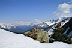
* * *
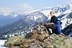
... на перевале Мамай - Выдринная ...
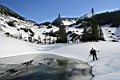
* * *
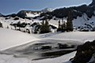
* * *
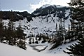
* * *
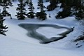
... а это те самые два озера, маленькие и безымянные ...
Ну короче, мы свалили по быстрому с перевала, забрали
внизу рюкзаки и пошли в лес, где нет снега, журчат ручье, много дров и черемша
на полянах растет. Нашел отличную полянку в районе между Лесным и Весёлым
кулуаром. Собрали много дров, чтобы на всю ночь хватило. Костер - лучшее
средство от медведей. Палатку я не брал и начал делать балаган из веток и
полиэтилена. "Мы чего, на улице спать будем???" - удивилась моя
спутница. "Не... В помидорном парнике, у нас как раз лица от загара красные
:)" Небольшая закатная фотосессия, плотный ужин и посиделки у костра до
темноты.
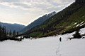
* * *
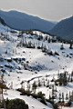
* * *
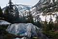
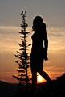
* * *
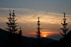
* * *
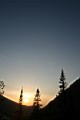
Ночевка "на улице" оказалась совсем не
холодной. Утром мы насобирали свежей черемши, будем грызть ее в городе и солить
на зиму :) Я запрятал в лесу спальник, полиэтилен и котелок. Пошли обратно
пораньше. Машина была на месте, дорога подсохла, так что выехали без
проблем....
Вообще-то в планах на эти выходные было пройти от
перевала до горы Поляна, а от туда вернуться по верхам к горе Мамай и спустится
к зимухе. Или от Поляны через Южный цирк выйти на водопад. Но не получилось в
этот раз новые места посмотреть, так как снега еще много. А в снегу мы эти места
уже видели, так что ждем реального лета с комарами :)
Фото: Лёха Слюдянский, Света Коновалова. Май 2008
Текст: Лёха Слюдянский. Август 2008.